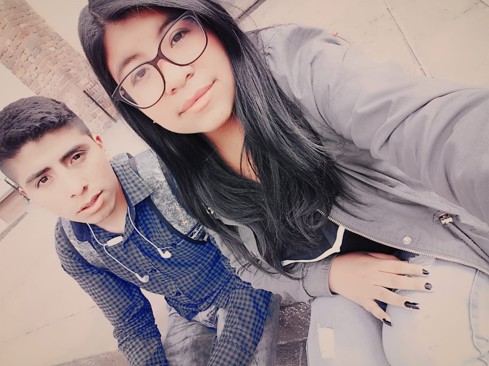
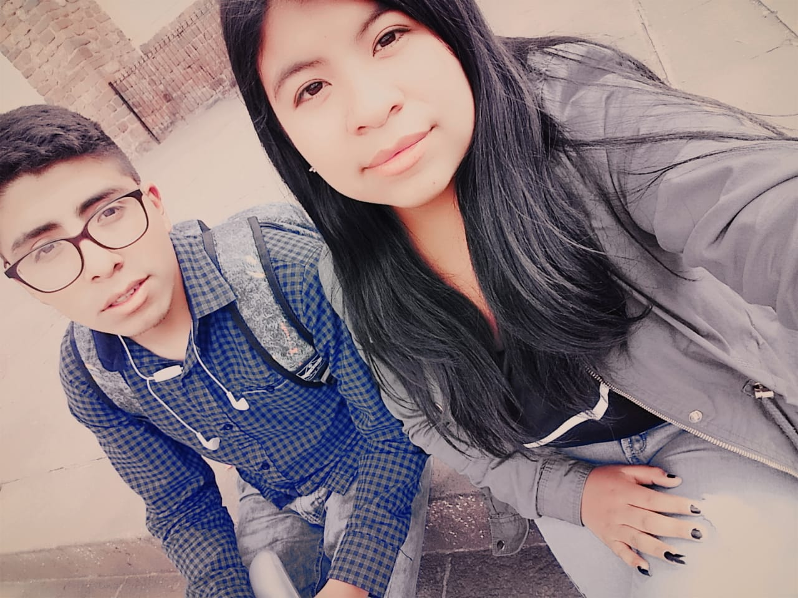

- 


- 

Hola bienvenida una vez mas durante un año y mas creo despues de estar con alguien q en realidad no me queria ya me habia acostumbrado ya habia superado esa etapa de mi vida pero un 26 de diciembre aun mas antes de esa fecha yo me cruze con una señorita en el los carros q vienen del cusco y despues de eso me fui al paradero de taxis y venia tras mio llegue al paradero en la cual me pregunto sobre el pasaje ps nos subimos en el mismo auto despues de eso bajamos en el mismo lugar q yo me baje y me pregunte quien era porq no era de por aqui y me meti a mi casa y ella se fue para abajo pos en ese entonces suponi q nunca mas la veria y no me canse de buscarla en fb en realidaad despues de un tiempo la encontre y la escribi y ps recordamos donde nos habiamos cruzado y todo hasta el momento todo hiba muy bien y ella fue muy atenta y graciosa conmigo en ese entonces nos pasabamos hablando dias y noches incluso madrugadas donde todo era estupendo y entonces un 26 de diciembre le dije para estar y ella me acepto ps me sentia feliz y yo al igual q ella fuimos nuestro mejor regalo de navidad y me alegro tanto eso sentir q alguien estaba conmigo y ps de alli paso tiempo siempre hiba a cusco con mentiras para verla hacer de todo casi todas las semanas tan solo por verla no solo para cogerla para pasar tiempo con ella para sentir su hermoso y calido cuerpo.
Con ella pase los mejores momentos de mi vida las hermosas noches junto a ella siempre la quise dentro de mi tal vez no fue suficiente pero la queria y era demasiado orgulloso ps en ese entonces me fui a lima y ella no sabia y no queria decirselo por q se q se sentiria muy mal al saberlo y no le dije hasta despues de un tiempo y ella se molesto mi intencion era no preocuparla ps la habia preocupado se molesto me fui por unos motivos q tu lo sabes y aun no sabes algo pero bueno y te contare ps no ingrese y ps me quedaba estudiar alli pero decidi venir para cusco por q se q me necesitabas y queria ir alla por ti despues de tanto tiempo fue muy dificil para mi y esperar el dia para regresar aqui llegue un domingo y ese mismo dia me fui para verte al cusco dijiste q me abrazarias cuando me veas nos encontramos por gracilaso y nos vimos y solo me dijiste hola no llego tu abrazo nos fuimos caminando hasta abajo ps despues de esos tiempos yo me regrese a aqui averigue el instituto y empezaba el 7 de enero ps recien vine ese dia ps

tu fuiste muy buena conmigo me diste todas las atenciones y los cuidados y amor todos los dias me alagabas me impulsabas a q mi dia fueran mejores me decias "suerte en tu clases amor" y en mis examenes me decias "vamos amor tu puedes " eres la mujer mas abnegada jamas nadie se habia preocupado por mi darme todo ese amor incondicional a pesar del daño causado y las lagrimas causadas por mi culpa de esas noches q no pudiste dormir por esos dias q no te abraze cuando mas lo necesitabas por esas atenciones q no te daba perdoname no sabes como me dueleee esto me duele!!!! perdoname amor mio por todo por te lo suplico.

yo te agradezco por todo lo q me has dado tu amor tu paciencia tus locuras tus molestias tus tristezas compartimos tanto amor felicidades como cuando fuimos al hotel tu trajiste el arroz chaufa con papas frita y yo traje el pollito como comiamos como puercos despues de una tremenda cogida las unicas en mi vida contigo y las mejores contigo aprendi todo amor mio gracias la vez q fuimos a la piscina la señora q te habia insultado y le puse su pare la vez q se perdio tu celular te acompañe hasta los ultimos los momentos de paseo los momentos en los carnavales los dos juntos riendonos discutimos temas super interesantes nos cachamos de la risas hicimos me tire un pedo fueron muchas cague en tu lado nos duchamos juntos lloramos juntos viniste al instituto me trajiste comida la vez q te lleve a mis juegos deportiivos en la andina y el ipd cogias mis cosas tan linda tu mi vida me reglaste cosas aww mi amor :-( la vez q fuimos a los juegos del molino donde disparaste jejej ganamos un cañonazo comimos a midad como tmbien jugamos pinki momento bellos a tu lado los recuerdos siempre estaran presentes aqui en mi y te amare por el resto de mi vida..
lo unico q deseo en estos momentos es q vuelvas amor mio me estoy muriendo sin tu amor te extraño te nesecito conmigo quiero q eestes conmigo nuestro amor aun puede solo es depende de ti te juro q no te voy a fallar dame una oportunidad por favor te lo pido por lo q mas quieras te lo ruego por este amor inmenso q te tengo dejame demostrarte q no soy ese tipo malo q conoces dejame por favor ingrid por favor!!!quiero estar contigo toda una vida yo vine por ti con el fin de estar aqui juntos y serca por favor quiero pasar el resto de mi vida contigo caminar comer jugar corrwr hacer las cosas bien juntos tu me apoyaras como asi yo lo are te apoyare en todo te ayudare tus tareas en los q se pueda pero por favor vuelve si quieres me arrodillare ante ti pero vuelve por favor !!! vuelve!!!! por este amor llevamos años no dejes q esto termine aqui por favor mi vida contigo quiwero hacer muchas cosas contigo quiero tener hijos una familia quiero tenerlo todo pero contigo contigo lo quiero todo mi amor te presumire como nunca lo hice mi amor hare todo lo q me pidas e iremos siempre juntos superaremos juntos cualquier dificultad q tengamos festejaremos cada triunfo nuestro iremos y haremos los juntos de la mano los dos hacemos uno un amor fuerte inquebrantable pero vuelve!!! mi todo eres tu no aguanto mas estar asi quiero q vuelvas los dias se me hacen mas largos al noe estar contigo mi vidaaa..
bueno mi amorcita hermosa espero q todo lo q hice hasta hoy valga la pena y q vuelvas mi vida q sin ti no soy nada tu eres mi complemento mi otra mitad q me hace falta para seguir adelante tu eres mi motor mi motivacion de todos los dias eres la q me impulsa a ser mejor cada dia mi ingrid preciosa espero tu pronta respuesta a esto y espero q te haya gustado lo hice con mucho esfuerzo me costo dias y dias pero bueno ahi esta con mucho amor para amor en la parte superior esta el menu de navegacion y gracias por todo nuevamente y me despido con un te amo infinitamente.. ------------------------------------------------------------------------------------------------------------------- ....---- me costo mucho tiempo hacer esto jajaj pero todo sea por ti te adoro te amooo nose cuando vayas a ver esto pero bueno°ESPERO QUE SEA PRONTO quiero q te me cuides ya sabes cualquier cosa siempre estare aqui si me necesitas escribeme o llamame si por favor para cualquier cosa aqui estare para ti .SE FELIZ INGRID JESSICA Y PERDON POR TODO UNA VEZ MÁS ERES LA MEJOR Y SIEMPRE LO SERAS ....espero siempre hablar contigo ..cuidate